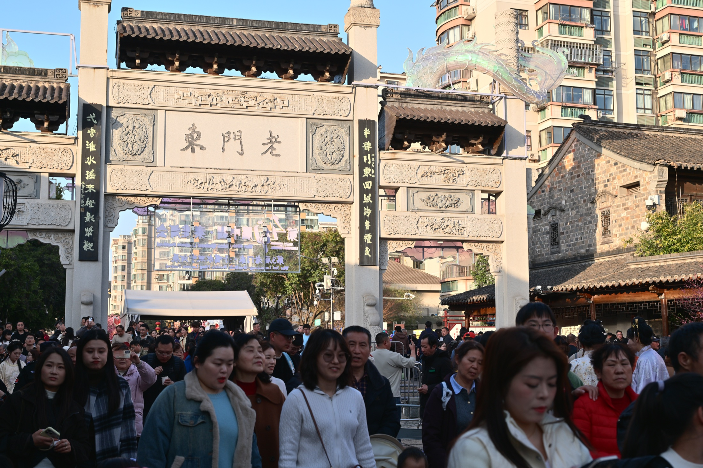
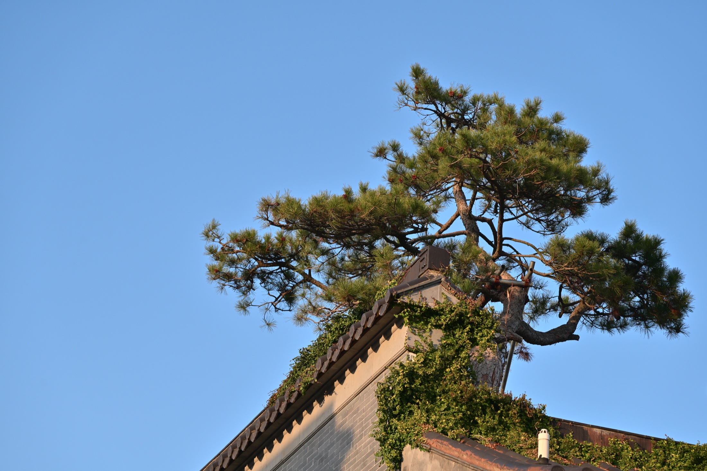
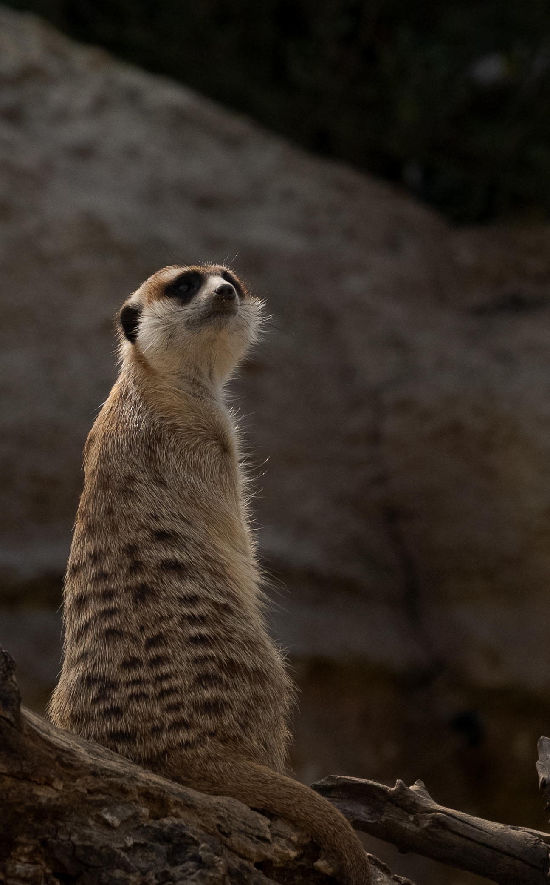
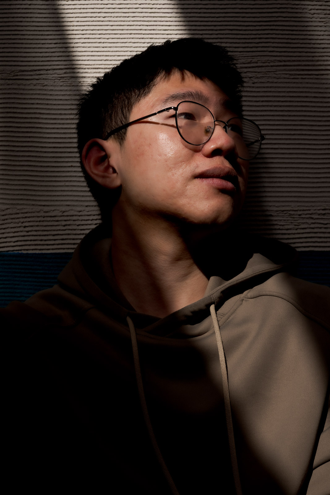
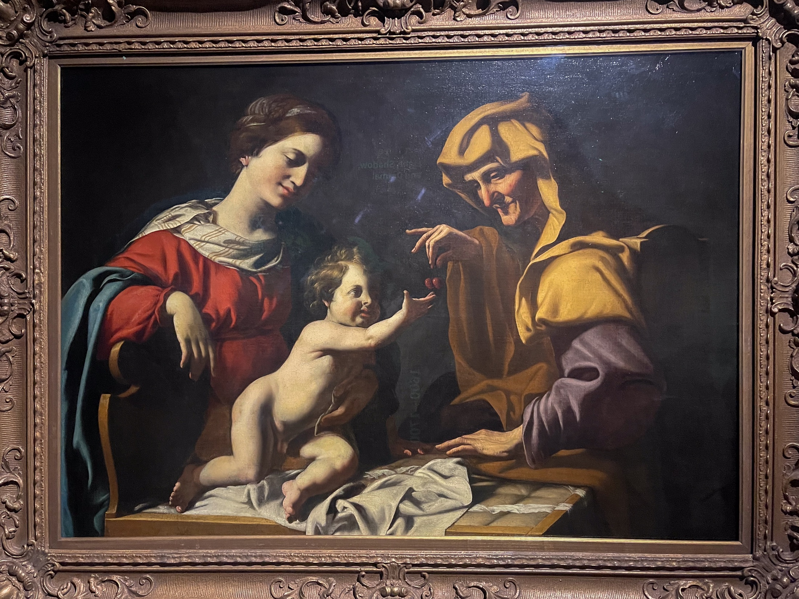
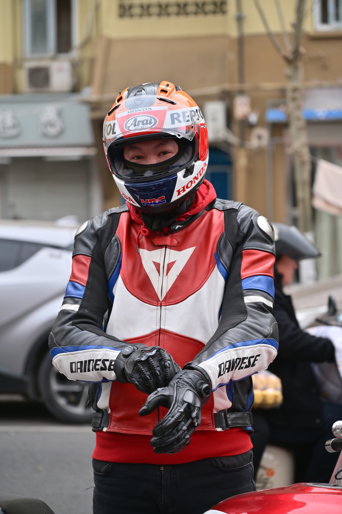
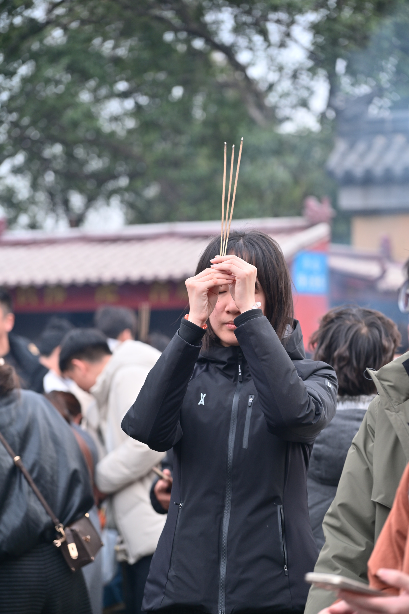

旅行
南京游记
前言
当初是谁说要来南京的
在一辆黄色的当地出租车里，我坐在后座的中间，左边是穿着白色羽绒服的lucky，右边是黑色薄外套的阿呆，前座是夹克衫的掏粪。这已是在南京的最后一天，我们在前往酒店的路上，离这次旅行的结束不过一个小时。
“当初是谁说要来南京的？” lucky嘟着嘴，收敛不住笑。
是的，我已经记不清当初是谁第一个提出要来南京的，只记得要按照往年的惯例，和lucky在春节聚一聚，既然他不能来找我们，那只能我们去找他。
我想起出发前三天，当我把小红书的攻略整理到平板里，看着一旁崭新的、立在桌面上的相机，我明白南京于我是个练习摄影的地方；
当掏粪在群里零零散散地分享不知从何处找来的小吃店名时，南京于他是个吃美食的地方；
当老头和阿呆带着大包小包、等待火车的到来时，南京于他们是个中转的地方；
至于lucky，他向来是只出一个人，事后还要开玩笑，猛烈抨击，南京于他就不是个地方。
我小时候去过南京，依稀记得和母亲站在老门东的门牌下，外面天色已黑，人群黑压压地一片前进着，走向灯火明亮的夜市。
老头也去过，在南京大牌档的底下，他说高二那年的暑假，和高中同学在这里吃了晚饭，掏粪也在；
lucky十年前可是南京的常客，久住在新街口附近的姑姑家里。
但要说现在的我们对南京是个什么看法，我们只能摇摇头。毕竟一个地方去过但都忘了，那就不算是去过。
所以才有了此次的出行。
旅行
老门东
我和阿呆走在斑马线上，下午四点的太阳投下柔和、温热的光。线后面的汽车整齐地排列在一起，长得望不到底。一旁身穿绿色警服的交通警察，手里拿着指挥棒，左手笔直地展开，右手抬到胸口的位置，时不时吹动口哨，警告司机此处不能左转。
“我想快点把这杯奶茶扔掉。” 阿呆摇了摇手里还剩四分之一的奶茶，这是在半个小时前跟着老头点的茶颜悦色。我猛吸了一口自己的那杯，也跟着摇了摇，
“南京的司机也太坑了，横冲直撞也就算了，还有两公里就停了，钱却算进去了。”
我看着地图，和阿呆往老门东的方向走，说好和掏粪他们在北门汇合，心里还有点愧疚。
我们是在中午十二点下的火车，坐了半个小时的地铁，在正午的大太阳下步行了一公里后抵达的民宿。
民宿在徽商银行的后面，从外观看，是座经营状况不错的办公楼改建。
“现在我学聪明了，都是从实拍视频里民宿外的走廊来判断好坏，一般走廊装修好的，里面基本也不会太坏。” 我自信地分享自己挑选的经验，带着大家向门内走去。
门廊是块劣质、带着污点的木板，左侧墙壁旁放着一张小的透明桌，上面摆着塑料的装饰花，右侧是唯一的卫生间，排风机发出轰隆隆的声音，像是在下雷雨，房间弥漫着不知从哪发出来的、腐烂的气味；客厅光秃秃地放着沙发床，一张小木桌挤在窗户旁，过道狭小；二楼两张大床紧挨着，隔开的内间封闭得像座棺材。
毫无疑问，我被骗了，但却是大家一起买单。

当看到老门东底下的人潮时，我就知道短时间内不可能和掏粪他们相遇。从入口望去，不是记忆里黑压压一片的人海，而是穿着各色衣服、像蜗牛一般向前蠕动的男女老少；入口处还有将近二三十米的队伍。
手是不好伸开的，脚是需要等待，才能向前迈一小步的；眼睛除了去看前面人的后脑勺，就只有街道两边开的商铺；一不留神，就找不到刚才还在一旁的阿呆了。
“走吧，没必要一直往里硬挤。”
我跟着往回走的阿呆的背影，低着头，缩着肩膀，又回到了入口。
在去「大报恩塔」的小路上，阿呆时不时地停在原地，举起挂在胸前的相机，对着晴天、墙壁和居民楼拍照。我像开关一样打开寻找猎物的眼，开始打猎。

旅行
夫子庙
落日时分，红彤彤的太阳倒映在秦淮河上，几艘小型游船缓缓地开往岸边，船顶亮起橙黄的修饰灯，底下悬挂着红灯笼，湖面波光粼粼，像幅印象画一样染上颜色。河边有座桥，桥上车流不息，行人走在两侧的高地上，有拿着红旗、走在前头的导游领队，放大的声音从胸前的扩音器里传来；有倚靠在栏杆，高举手机自拍的情侣；有骑在父亲肩上、手指远方的小男孩…
“掏粪他们到底什么时候来？” 我站在桥上，眺望远方的城墙，墙上依稀可见人影。
阿呆摇摇头不说话，忽而他扬起头，脸朝向侧方，“这不来了嘛。”
我循着他指示的方向，看着他们三人穿过街边卖糖葫芦、玩具的小商贩们，lucky一边说，一边止不住笑，声音变得越来越清晰，
“南京啊，我觉得不如…”
时隔两个小时，这是我们第一次的相遇。
下次相遇时，lucky坐在钢铁博物馆一旁的椅子上休息，天空一片深蓝，已看不见太阳，月亮也未露面，椅子旁的水池倒映着博物馆的宣传画。
“我看啊，要说最无组织无纪律的，就是你和阿呆了。”
我挠挠头，笑着不说话，只是拿着相机，蹲坐在靠近水池的地上，寻找角度按下快门。
吃过晚饭，散步时阿呆和老头钻进了一家文创店，在这家店的门口，一个戴着深棕色棒球帽的老头坐在木凳上，手里捏着实木的模型；离老头不远处，一个穿着工作服、年纪在三十上下的女人在打哈欠。商店的中央挂着一条三米长的线，上面悬挂着女生会喜欢的小摆饰。
当其余三人等不下去，派我前去查看，只见悬挂物的后面，阿呆和老头拿起一个个小罐子，闻了闻后又放下，
“老板我要这个西瓜味的香水，请问多少钱一瓶啊。”
等在门外的掏粪，此时把脚移来移去，看着相邻的洗耳店，对着lucky说，“都够我们去一旁洗次耳朵了。”
十分钟后，拎着纸袋的阿呆和老头走出门外。阿呆把纸袋提到空中，左右摆了摆，
“卧槽，只要七十，真是赚大发了，网上这气味的都要好几百。”
掏粪、lucky和我都不说话，只是快要憋不住笑了。
后来我们上了次厕所，又走散了，在秦淮灯会下重聚。
“我刚在网上找到一个人，他能免费带我们进去，去不去？” 阿呆加快了脚步，小跑到走在前头的我的一旁。
我摇了摇头，只是往夫子庙的方向走去，“天下哪有这样的好事，能免我们每个人90块钱的门票钱。”
夫子庙的情形和下午的老门东相似，不同的是，晚上遮住了部分衣服的颜色，眼前是黑压压的一片。为了管控人流，每过三百米，就有一列穿着警服的警察，他们立着军姿，警告每个逆行的人。
途中遇到一个地方排起了长队，在队伍的前面人们纷纷举起手机，对着同一个方向，原来是条挂着灯笼的龙。
自此，我们便不抱有任何希望，朝出口的方向离去。
红山动物园

lucky双手紧握住挂在胸前的相机，向玻璃门的方向走去。
我站在原地，看着他怎样一步步穿过推搡的人群，外面有及腰高、见空就往里钻的小孩，中间有穿着大红棉袄，说话像喇叭的大妈，把小孩背在背上、侧着身往里挤的父亲，最前面是右手高举手机、左手和身体抵住墙的人们。
他不见了许久，像被吸收进了沼泽地里。
直到一身因挤压有些变形的白色羽绒服，从黑色丛中钻出，沼泽地才把他吐了出来。
“后面的小孩猛顶我的屁股。” 他理了理衣服，抬头笑着，右手单拎着还亮着屏幕的相机，上面是一只睡着的狗熊的屁股，
“还好我结实，我直接给他顶回去了。”
我懒得往人群挤，和掏粪坐在休息区时，阳光透过顶上的布带，一束光打在半青半白的墙壁上。
“掏粪你快坐到光底下。” 我向右摆了摆手。
光像一把出鞘的长剑，照在掏粪的左半边脸上，其余笼罩在阴影中。

“还不走吗？” lucky说。
他的肩膀微微前倾，相机垂落在胸前，眼皮耷拉着，嘴唇表面被太阳晒得有些脱皮。他低着头看着地面，地面的尽头依旧是一片人群，一旁立着指示牌，上面写着老虎馆。
“看完这个我们就走。” 老头说。
老头戴着墨镜，嘴角斜向上笑着，眯着眼。他穿着一身橘红色的衣服，背着土黄色的双肩包，笔直地站着，眼镜竖着挂在胸前，双手握在肩带，抬头目视远方。
他们顺着人潮往里走去。
我站在指示牌的入口，一位姑娘紧挨在我的右侧。她年纪与我相当，背着亮丽的黄色书包，脚上一双白色的帆布鞋，下身是浅蓝色宽松的牛仔裤，上身搭配着米色毛衣和一件薄外套。
她朝入口里侧走去，那里游客们正排起长队，等着和卡通形象的老虎模型拍照。
她四处张望，最后停在墙壁边上，右手高举手机，左手比成剪刀，对着前镜微笑。待她放下手机，她走到队伍的末尾，拍了拍前方两个站在一起的女生的肩膀。
老虎在阳光底下闪闪发亮，一旁的她露出和刚才一样的微笑，这次更加自然。
在她忙着拍照时，我曾两次举起相机，眼睛贴着取景框，而后又放下。我刚要往她的方向前进一步，而后又退了一步。
人潮在我的右侧平稳地流动着。
她向两位女生点了点头后，朝我走来。我右脚又想着踏出一步，但收住了。她紧挨着从我面前走过，不一会儿，就被人潮吞没了。
南京博物院
“你们先走。” 我站在原地，lucky、阿呆和掏粪三个人往走廊深处走去，“我去上个洗手间。”
看艺术作品是件私人的事，你得一个人看才行，我一边洗着手，一边想着。
待再收到他们的消息时，我正在南京博物院的民国馆里走着，眼前有位穿着青绿色旗袍的女性倚靠在门旁，她年纪在四十上下，嘴唇红润，皮肤在白光照射下显得细滑。她右手抵着门框，左手叉腰，前倾着身体，旗袍在胸前那一段绷紧了。
“对，就是这样。”离她五米远的摄影师说着，“把下巴再抬高一点。”
咔擦一声，闪光灯下女子露出妩媚的微笑。
“我也要和妈妈拍。” 小女孩说。她从摄影师身边走过去，一身白色的旗袍，十岁上下。她站到门边，贴着女人的腿。
我从她们身旁经过，在一家餐厅门口旁的椅子坐下。眼皮一旦合上，要花不少力气再打开。
我好像来过这个地方。橘黄色的砖瓦搭建的楼房，贴了彩色图案的圆拱形窗户，灰黑色的瓷砖地板，两层楼的车站，车站前停了辆民国时期的汽车，灯光在它黑色光滑的表面发亮。
是在什么时候呢。我彻底闭上了眼睛，听不见游客的脚步和说话声了。
“你人呢？” 手机震了一下。
“我们蹭到了免费的讲解。” 又震了一下。
是lucky发在群里的消息。我站起来，伸了伸胳膊腿，往回走。

我看着卡拉瓦乔的画。
人物在光里，背景是黑的，脑中闪过黑白的摄影作品。
他们的眼睛看向同一个地方。你也跟着看过去。
红、黄、蓝放在一起，饱和得亮丽。
馆里有三四十幅这样的画。我一幅一幅地看，走得很慢。
小吃街与机车男

掏粪站在队伍里，前面是戴着头盔、身穿骑车服的年轻男子，后面是穿着黑衣服的大妈。队伍尽头，一个女人穿着红色的围裙，正用锅铲摊平面饼，面饼上面铺了一层薄薄的鸡蛋，中心放着一片里脊，四周涂着棕红色的酱料。摊位旁，小女孩把做好的煎饼放进塑料袋，笑着递给顾客。
我站在离队伍不远的街边，一个老人骑着四轮电动椅经过，嘴上叼着烟。lucky站在我身旁。远处的阿呆再等两个人就能买到青团。
“来，掏粪，看我这边。” 我说着，把相机对准他。正当lucky也举起挂在胸前的相机，
“你们这相机买来多少钱？” 机车男说着，转过身，依旧戴着头盔，说话时头盔后面的眼睛变小了。
“我买来将近两万。” lucky说。
“我一万多。” 我说。
我们一齐看向机车男。
“几年前我买了佳能的旗舰款，” 他把目光落在lucky的相机上，“当时花了十万。”
阿姨卷起了两个煎饼，拿戴手套的手擦了擦脸上的汗，小女孩把煎饼包进塑料袋，队伍前进了几步。
“你这拍照怎么样？” 机车男跟着往前走，“你这相机能放什么卡？”
“一张sd卡，一张tf卡，” lucky说，把相机带绕了一圈，指着相机深灰色的皮革表面，“我放了一张2TB的sd卡在里面。”
我侧着看了lucky几眼。lucky和机车男继续说下去，我和掏粪偶尔插话。
“你的带鸡蛋、海带、肉片的煎饼做好了，共十元。” 阿姨说。
机车男从女孩的手里拎过塑料袋，热气从袋口冒了出来，他朝停在街边的机车走去。那是一辆外形很酷的摩托车，银色的金属器械闪闪发亮，座椅是黑色的皮革，崭新的，红白相机的机身搭配着骑行服，上面印着“Marlboro”。
“但现在我不玩相机了。” 他一边说着，一边戴上黑色的手套，轻拍了他身前的爱车。他跨坐到车上，身体前倾，双手握住车把，伴着引擎的呼呼声，他转了一大弯。
他穿过了小吃街的街牌，不一会儿就消失了。
那天晚上，我把lucky的sd卡插进电脑，在他一旁筛选照片。sd卡显示128GB，我又侧着看了lucky几眼，
“看他那样子就知道他肯定不懂相机，” lucky说着，手握着鼠标，盯着酒店的电脑屏幕，“随便骗骗咯。”
鸡鸣寺

“保佑弟弟今年能考上一个好的大学。保佑爸爸身体健康，不要喝太多的酒。”
她瞥了一眼手里的三炷香，确保它们笔直地朝向天上，在心里接着默念，
“保佑妈妈少打麻将，多出去旅游。保佑我今年工作顺利。”
她睁开眼，把高举至额头的双手放下，仍紧紧握着香，向一旁的香炉走去。离香炉五步远的地方，有座黄色的墙壁，中心写着“鸡鸣香海”，顶上棕黑色的屋檐向外翘着，边缘被烟熏黑了。她等在一位妇女的后面，看着她把手穿过香炉的开口，将香火立着地插在灰上。她跟着照做。